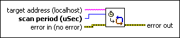
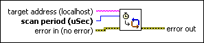

Set Scan Engine Period VI
Owning Palette: NI Scan Engine VIs
Requires: Base Development System (Real-Time, Windows)
Sets the scan period of the NI Scan Engine on the target.

 Add to the block diagram Add to the block diagram |
 Find on the palette Find on the palette |
Owning Palette: NI Scan Engine VIs
Requires: Base Development System (Real-Time, Windows)
Sets the scan period of the NI Scan Engine on the target.

| Add to the block diagram |
Find on the palette |
 |
target address specifies the IP address or DNS name of the target. |
 |
scan period (uSec) specifies the period for the scan engine running on the target. |
 |
error in describes error conditions that occur before this node runs. This input provides standard error in functionality. |
 |
error out contains error information. This output provides standard error out functionality. |
Changing the scan period while the scan engine is running can take a significant amount of time, and might cause the scan engine to run late, resulting in a major fault. If changing the scan period results in a fault, you can safely clear the fault after the new scan period takes effect.
 | Note If the target includes an expansion I/O driver, you can set the scan period only when the NI Scan Engine is in Configuration Mode. You can use the Set Scan Engine Mode VI before this VI to put the NI Scan Engine on the target into Configuration Mode. |
Refer to the Scan Engine.lvproj in the labview\examples\Scan Engine directory for an example of using the Set Scan Engine Period VI.
 Open example Find related examples
Open example Find related examples